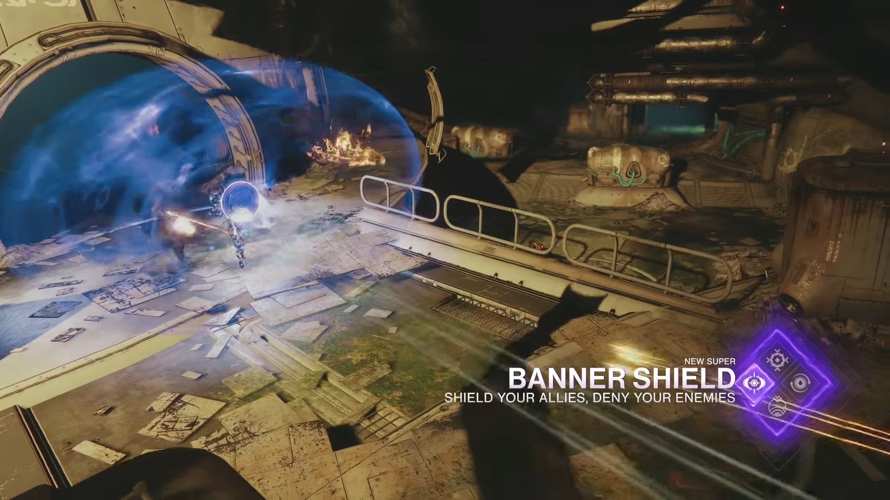
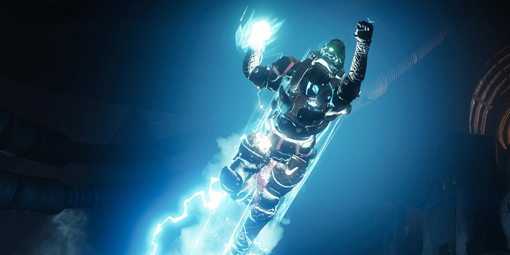
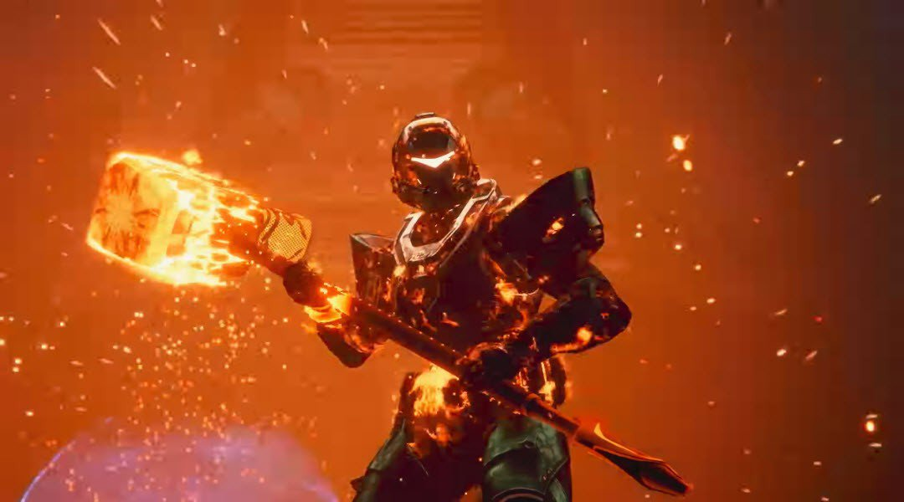

Titan
Titans are the most durable of Destiny's class triad, sacrificing agility and recovery for the ability to withstand a tremendous amount of punishment. Much like its Hunter and Warlock brethren, the Titan class is divided into three subclasses at present; each specialization offers unique abilities and alters the manner in which the class is played. Shared among all subclasses is the Barricade class ability; this technique is further divided into Towering Barricade and Rally Barricade, each allowing players to deploy temporary cover on the battlefield.
In the Destiny 2 base game, Titans start with the Void element subclass of Sentinel. They gain the ability to unlock the Arc element subclass, Striker, at level 8 and the Solar element subclass, Sunbreaker, at level 15.
Destiny 2: Forsaken gives each of the three character classes three new supers for each of their subclasses, which are tied to a brand new third subclass branch. The first of new subclass can be unlocked simply by playing through the Forsaken campaign. After the first mission is completed, enemies will drop feather-like objects caled Visions of Light. Once enough are collected, a special mission is unlocked on Io that rewards you with a Seed of Light that can be used to unlock one of the subclasses. You start out with just the super ability and unlock the melee ability and passives by dealing ability damage to enemies. The second seed of light can be obtained from completing the Tier 2 or above version of the Blind Well activity, and the third seed of light can be received by completing the first raid encounter of the Last Wish raid or giving an offering to the Oracle on the third week of the Dreaming City curse cycle.
 Sentinel: Code of the Commander Melee - Tactical Strike: Sentinel’s melee ability causes an explosion around the target when it hits. This eruption of damage will also trigger any void detonators attached to nearby targets. Perk - Controlled Demolition: All void ability damage attaches a void detonator to the target. Dealing damage to a target with a detonator attached causes it to explode after a certain threshold, creating a chain reaction that attaches detonators to surrounding enemies. Perk - Resupply: Sentinel players and their allies will regain some grenade energy and health when detonators explode around them. Super - Banner Shield: The super is still the shield, but now it creates a wall of light that blocks incoming damage when the player is in the guard position — and yes, allies can shoot through this barrier. Allies firing through the barrier will extend Banner Shield’s duration.
 Striker: Code of the Missile Melee - Ballistic Slam: The Striker’s melee ability lets players jump in the air, aim down and fly like a missile into their enemies. Basically it’s like the Death From Above perk in the original Destiny, but as a normal melee ability instead. Perk - Impact Conversion: Ballistic Slam hits will cause Thundercrash to recharge more quickly. Perk - Inertia Override: Any ammo players pick up while sliding will instantly reload their weapon. Successfully reloading through a slide will increase the gun’s damage for a short period of time. Super - Tundercrash: The super is Thundercrash, which turns the Titan into a mortar, basically. You can launch your Guardian through the air and smash into the ground. While in the air, you have the ability to aim yourself.
 Sunbreaker: Code of the Devastator Melee - Throwing Hammer: The Sunbreaker’s melee ability is ranged like the Hunter’s throwing knife. But instead of a blade, Titans will throw a small hammer, which will stay where it lands. Picking it back up will fully recharge the player’s melee ability. Perk - Tireless Warrior: Picking up the hammer will cause your health to instantly start regenerating. Perk - Roaring Flames: Each solar damage kill Throwing Hammer’s damage, up to a triple-damage buff. Super - Burning Maul: The super is Siege Hammer, which creates a giant flaming hammer that the Titan can spin around them in a circle by repeatedly tapping the primary fire. Secondary fire will cause the Titan to smash the hammer into the earth, sending out tornadoes of flame.